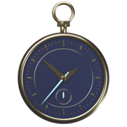

BORROWED
SECONDS
Freeze anything for three seconds. Then pay them back.
Loading…
Move WASD / arrows · Borrow click / Space · Focus hold Shift or right mouse · Rewind Z · Pause Esc / P · Gamepad works too